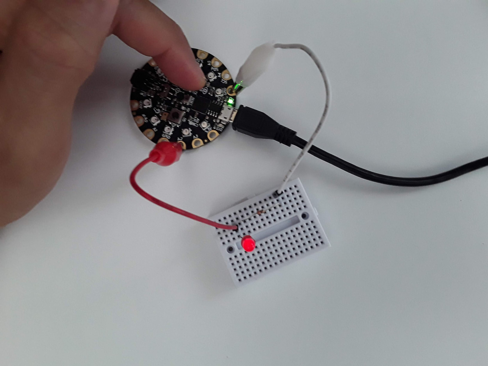
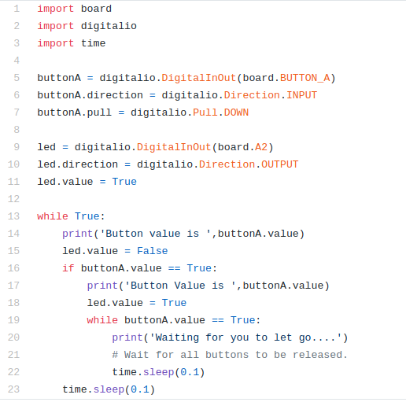
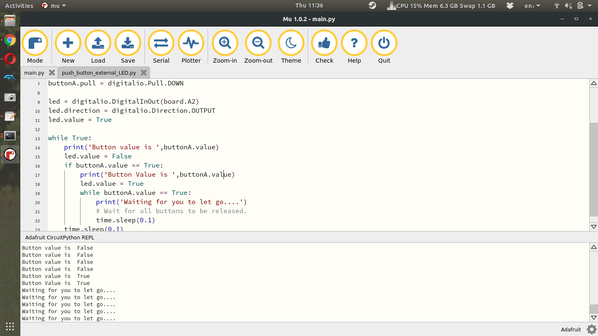

Section 7.6 LED with CPX button
Finally, I want to use one of the buttons on the CPX to blink the LED hooked up to pin A2. For this code to work you first need to detect a button press and then tell the program to change the light from True to False depending on what it’s current status is. This one is a bit more difficult so I’ll include the code here and discuss the code itself. Here is my circuit (identical) to the previous one with Button A on the CPX pressed down.

Alright so how do we detect a button press? Well the documentation on this is not so straight forward. What we want to do is detect the INPUT of a digital signal and then do something if we detect that signal. Here’s the code I created to get it to work.

The code above is an image. You could type exactly what you see and hope you don’t type any errors (which is highly unlikely) or you could look for my code on my Github. Have you bookmarked this link yet? I recommend you do so!!! So you’re making a code about Buttons....hmmm. Click that Github link. Where do you think the code about Buttons is located? Anywho, let’s talk about the code.
The first 3 lines are exactly the same as before. Line 5 through 7 are similar to creating the “led” variable except we’re using BUTTON_A as the board value and setting the direction to INPUT. Finally we’re setting the pull direction to DOWN. This means the button acts like a pull down resistor and when it’s pressed the value of the button goes HIGH.
Lines 9-11 are the same as before. We create an led variable and tell the CPX that the led is hooked up to pin A2. We then start the while loop on line 13. First if you click the Serial button you’ll see the text ‘Button value is False’. It’s False because buttonA.value is not being pressed. On line 15 the led is set to False (turned off). On line 16 the button value is checked using an if statement as to whether or not the button is pressed (True). If the button is pressed, the user will be notified that the button is pressed on line 17 and the led will be set to True (on) in line 18. Lines 19-22 are while loop that will notify the Serial monitor that you must let go of the button before the code can continue to the main while loop. The time.sleep functions are there to make sure a human can operate the button without code running faster than a human can press a button. When I press the button down here is the output I get from the Serial monitor.

Here you’ll see 4 lines that say “Button value is False” and then two lines that say “Button value is True” followed by 5 lines that say “Waiting for you to let go...”. See if you can get this code to work and play with it and modify it as you see fit. By the way, the LED connected to pin D13 has this exact same circuitry, an LED a resistor, it’s all just soldered to the PCB so you don’t have to build it using a breadboard. Hopefully now you have some appreciation for buttons and LEDs!!